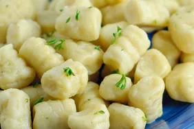

Gnocchi

Description
Gnocchi is simple to make with just three ingredients: mashed potato, flour, and egg. This recipe is one my family has used for generations.
Ingredients
Steps
- Boil and mash the potatoes.
- Combine the ingredients, then knead into a ball.
- Shape the dough into "snakes."
- Cut the snakes into pieces.
- Boil and drain the gnocchi.